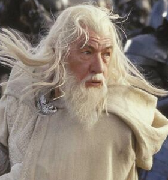

Гэндальф разбудил Пиппина. За окнами по-прежнему было темно, в комнате горели
свечи. Духота стояла, как перед грозой.
– Который час? - спросил Пиппин, зевая.
– Начало третьего, - ответил маг. - Одевайся, тебя призывает Правитель. Надеюсь, ты
не забыл, что служишь ему?
– А он даст нам позавтракать?
– Нет. Завтрак готов, - Гэндальф кивнул на стол, - и до обеда больше ничего не будет.
В Городе экономят провизию.
Пиппин угрюмо разглядывал небольшую краюху хлеба, очень маленькую (на его
взгляд) порцию масла и чашку молока.
– И зачем ты меня привез сюда? - проворчал он.
– Чтобы помешать тебе делать глупости, - в тон ему ответил маг. - Если тебе здесь не
по нраву, то, кроме себя, винить некого.
Пиппин насупился и замолчал.
Заметка 4
Когда Гэндальф снова привел его в зал со статуями и колоннами, Денетор сидел на том
же самом месте. «Как старый, терпеливый паук, - подумалось Пиппину. - Он что, так
со вчера и сидит тут?» Правитель предложил Гэндальфу сесть, не обращая внимания
на стоящего Пиппина, но потом живо обернулся к хоббиту.
– Ну, добрый мой Перегрин, надеюсь, ты провел вчерашний день с пользой и
приятством. Вот только угощение могло показаться тебе скудноватым. Но - война. - Он
слегка развел руками.
Пиппин покраснел. Ему показалось, что Правителю известны не только его слова, но и
мысли.
– Что же ты намереваешься делать у меня на службе? - спросил Денетор.
– Я думаю, что повелитель укажет мои обязанности.
– Укажу. Когда узнаю, что ты можешь. А для этого лучше всего оставить тебя при
себе. Будешь выполнять мои поручения, беседовать со мной, когда будет время. Петь
умеешь?
Глава 5
Поход Теодена

Мерри лежал, завернувшись в одеяло, и тщетно вглядывался в темноту. Ночь была тихой, безветренной, только деревья чуть слышно вздыхали вокруг. Он поднял голову и снова услышал настороживший его звук. Где-то вдали глухо били барабаны. Замолкая в одном месте, удары тут же возникали, в другом. Интересно, слышат ли их часовые?
Невидимые в темноте, расположились на отдых войска рохирримов. Пахло лошадьми. Мерри слышал, как они пофыркивают и мягко переступают копытами по усыпанной хвоей земле. На ночь Теоден остановился в глухом сосновом бору у подножия сигнального холма Эленах, поднимавшегося высоко над вершинами Друаданского Леса.
От усталости Мерри не мог заснуть. Шли пятые сутки похода. Мрак, становившийся все плотнее, приводил воинов в уныние. Мерри уже не понимал, зачем так рвался в этот поход, ведь ясный приказ короля позволял ему остаться. Хоббит уже не раз принимался гадать, знает ли король о его самоуправстве. А если знает, то что думает? Наверное, Дернхельм как-то договорился с Эльфхельмом, командиром их «йореда» (так Всадники называли отряды). Во всяком случае, воины старались не замечать лишнего новобранца. С ним никто не заговаривал, а если смотрели, то как на лишнюю переметную суму за спиной Дернхельма. Да и сам молодой Всадник за всю дорогу не проронил ни слова. Заметка 5 Тут поневоле начнешь ощущать себя никому не нужной обузой.
Войска Теодена все ближе подходили к опасным местам. До внешних укреплений МинасТирита оставалось меньше дня пути. Разведчики, которым удалось вернуться, доложили, что дорога впереди захвачена врагом. В трех милях западнее Амон Дина стоит целая орда, а большой отряд орков идет навстречу. Они уже в трех-четырех лигах от Друаданского Леса.